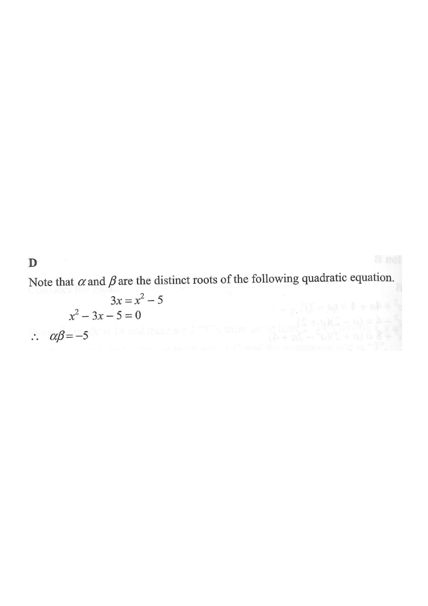

Scroll the solution to walk through the steps.
If $\alpha\neq\beta$ and $\begin{cases}3\alpha=\alpha^{2}-5\\[2pt] 3\beta=\beta^{2}-5\end{cases}$, then $\alpha\beta=$

Since $3\alpha=\alpha^{2}-5$ and $3\beta=\beta^{2}-5$, both $\alpha$ and $\beta$ satisfy the same equation $x^{2}-3x-5=0$. Given $\alpha\neq\beta$, they are the two distinct roots of
Key idea: two different numbers satisfying one quadratic ⇒ they are its two roots.
Rearranging $3x=x^{2}-5$ gives the standard form $ax^{2}+bx+c=0$:
Move everything to one side so the coefficients can be read off directly.
For $ax^{2}+bx+c=0$ with roots $\alpha,\beta$:
The question asks for the product, so only $\dfrac{c}{a}$ is needed.
Hence $\alpha\beta=\dfrac{-5}{1}=-5$, which is option D.
Check: the parabola $y=x^2-5$ meets the line $y=3x$ at two points whose $x$-coordinates multiply to $-5$.